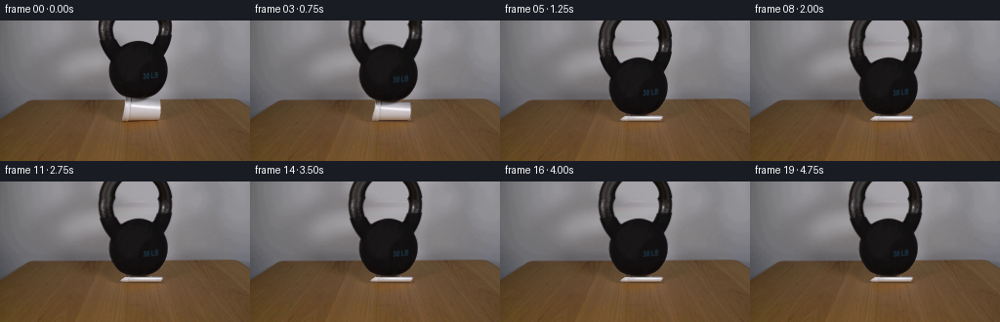
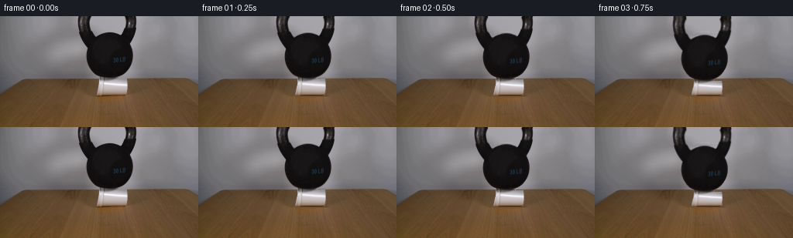
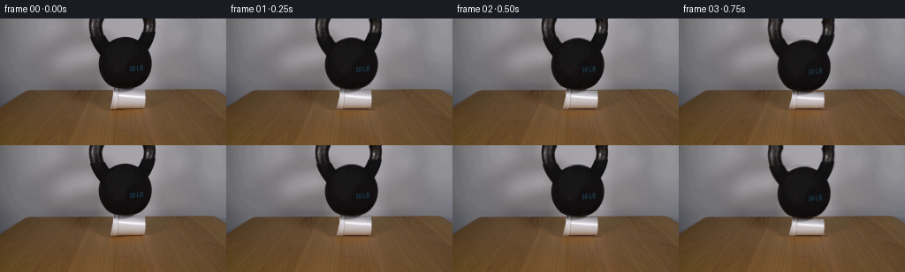

CODING AGENTS AS PIXEL WORLD MODELS
traex/GPT-6.1-Sol · 0191
点击播放 · 原生 RGB 像素
逐轮保存的候选
回放视频、检查图与代码变化。
每份候选均可单独播放。实际图片检查记录在下方工具轨迹中。
候选 01播放与检查图
点击播放 · 原生 RGB 像素


展开代码变化
--- 上一保存版本
+++ 本次保存版本
@@ -0,0 +1,217 @@
+from pathlib import Path
+import numpy as np
+from PIL import Image
+import cv2
+from scipy.ndimage import gaussian_filter, distance_transform_edt
+from scipy.interpolate import CubicSpline
+import artifact_io
+
+ROOT = Path(__file__).resolve().parent
+W,H=256,144
+SRC=np.asarray(Image.open(ROOT/'first_frame.png').convert('RGB'), dtype=np.float32)
+Y,X=np.mgrid[:H,:W].astype(np.float32)
+G=SRC.mean(axis=2)
+
+# The fixed photographic plate and the load are kept separate. All
+# extrapolation comes from the pixels around the silhouette in this plate.
+binary=np.zeros((H,W), np.uint8)
+for y in range(79):
+ a=(G[y,98:179]<100).astype(np.uint8)
+ a=cv2.morphologyEx(a[None],cv2.MORPH_CLOSE,np.ones((1,3),np.uint8))[0]
+ # Close the cast-iron highlights, without closing the opening in the handle.
+ binary[y,98:179]=a
+binary[79,134:151]=1
+# The cup's original silhouette.
+cup_area=np.zeros((H,W),np.uint8)
+for y in range(80,103):
+ left=128 - max(0,y-87)*.22
+ right=163.6-min(0.8,max(0,y-94)*.10)
+ cup_area[y,int(np.floor(left)):int(np.ceil(right))+1]=1
+
+# Fill the wall smoothly across the two handle legs and the iron body.
+# Interpolation samples the gray background, not the table.
+wall=SRC.copy()
+wallmask=cv2.dilate(binary,np.ones((3,3),np.uint8))
+for y in range(81):
+ mask=wallmask[y].astype(bool)
+ if not mask.any(): continue
+ knots=np.array([0,30,60,80,92,98,178,185,198,220,255],dtype=float)
+ # Include the actual opening wherever it is visible.
+ if y<27:
+ for x in [120,125,130,140,150,155,160]:
+ if not np.any(mask[max(0,x-2):x+3]):knots=np.r_[knots,x]
+ knots=np.unique(knots)
+ vals=[]
+ for x in knots.astype(int):
+ a=max(0,x-2);b=min(W,x+3)
+ vals.append(np.median(SRC[y,a:b],axis=0))
+ spline=CubicSpline(knots,np.asarray(vals),bc_type='natural',axis=0)
+ wall[y,mask]=spline(np.arange(W)[mask])
+# A consistent wall plate prevents any background motion after the load stops.
+# Repair the table behind the foam by continuing local horizontal wood grain.
+plate=wall.copy()
+for y in range(81,105):
+ left=122;right=169
+ if y<84: left=126;right=166
+ samples=np.r_[np.arange(109,left),np.arange(right,181)]
+ for c in range(3):
+ coeff=np.polyfit(samples, SRC[y,samples,c],2)
+ pred=np.polyval(coeff,np.arange(left,right))
+ pred=np.clip(pred, min(SRC[y,left-1,c],SRC[y,right,c])-7,
+ max(SRC[y,left-1,c],SRC[y,right,c])+7)
+ plate[y,left:right,c]=pred
+# Original grain and the soft contact shadow remain outside the cup footprint.
+
+# Anti-aliased matte from the object's original edge intensities.
+near=distance_transform_edt(binary==0)
+inside=distance_transform_edt(binary!=0)
+blur=gaussian_filter(binary.astype(float),.65)
+alpha=np.zeros((H,W),np.float32)
+sel=(near<=1.1)|(binary!=0)
+# Foreground brightness at borders is the rough, dark iron.
+contrast=np.clip((wall.mean(2)-G)/(wall.mean(2)-18+1e-5),0,1)
+alpha[sel]=contrast[sel]
+alpha[inside>1.05]=1
+alpha[80:]=0
+alpha[:80,:98]=0;alpha[:80,179:]=0
+# Keep metal reflections opaque, including the two polished handle highlights.
+for y in range(79):
+ xs=np.flatnonzero(binary[y])
+ if len(xs):
+ for seg in np.split(xs,np.flatnonzero(np.diff(xs)>1)+1):
+ if len(seg)>4:alpha[y,seg[1:-1]]=1
+foreground=(SRC-wall*(1-alpha[...,None]))/np.maximum(alpha[...,None],.02)
+foreground=np.clip(foreground,0,255)
+
+# Continue the cropped legs upward with their measured round-iron profiles.
+PAD=24
+iron=np.zeros((H+PAD,W,3),np.float32)
+am=np.zeros((H+PAD,W),np.float32)
+iron[PAD:]=foreground;am[PAD:]=alpha
+for yy in range(-PAD,0):
+ # Two approximately elliptical legs of the handle, still cropped at the
+ # top of the final view. The top arch remains outside the field of view.
+ # Outer and inner edge curves are tangent to those in the first frame.
+ yc=7.
+ lo=138.-38*np.sqrt(max(0.,1-((yy-yc)/45.)**2))
+ ro=138.+38*np.sqrt(max(0.,1-((yy-yc)/45.)**2))
+ li=140.-25*np.sqrt(max(0.,1-((yy-yc)/31.)**2))
+ ri=140.+25*np.sqrt(max(0.,1-((yy-yc)/31.)**2))
+ # At y=0, exact measured edge positions blend into the fitted ellipse.
+ fac=np.exp(yy/5.)
+ lo=lo*(1-fac)+101*fac;li=li*(1-fac)+118*fac
+ ro=ro*(1-fac)+175.7*fac;ri=ri*(1-fac)+160.8*fac
+ for l,r,sl,sr in [(lo,li,101,118),(ri,ro,161,176)]:
+ for xx in range(max(0,int(l)-1),min(W,int(r)+2)):
+ aa=float(np.clip(min(xx+.5-l,r-xx+.5),0,1))
+ if aa==0:continue
+ u=(xx-l)/max(r-l,1)
+ source_x=sl+u*(sr-sl)
+ i0=int(np.clip(source_x,0,W-2));f=source_x-i0
+ rgb=foreground[PAD-PAD,i0]*(1-f)+foreground[0,i0+1]*f
+ # Fully covered interior samples only, preventing the gray wall
+ # from bleeding into the extended edge of the handle.
+ if not (sl+1<=source_x<=sr-1):
+ sidx=int(np.clip(round(source_x),sl+1,sr-2))
+ rgb=foreground[0,sidx]
+ iron[yy+PAD,xx]=rgb
+ am[yy+PAD,xx]=aa
+
+# A source-derived cup texture, separated from table-colored antialiasing.
+cupmask=np.zeros((H,W),np.float32)
+for yy in range(80,103):
+ left=128-max(0,yy-86)*.22
+ right=164-min(.8,max(0,yy-94)*.10)
+ for xx in range(123,168):
+ lateral=np.clip(min(xx+.5-left,right-xx+.5),0,1)
+ # The bottom edge includes the foamy base but not its cast shadow.
+ bottom=np.clip(102.35-yy,0,1)
+ cupmask[yy,xx]=lateral*bottom
+cf=(SRC-plate*(1-cupmask[...,None]))/np.maximum(.025,cupmask[...,None])
+cf=np.clip(cf,0,255)
+
+
+def remap(arr,mx,my):
+ return cv2.remap(arr,mx.astype(np.float32),my.astype(np.float32),
+ cv2.INTER_LINEAR,borderMode=cv2.BORDER_CONSTANT,borderValue=0)
+
+def pose(t):
+ # Initial contact, elastic compression, then local wall buckling under
+ # the 30 lb load, followed by a damped settling on the crushed foam.
+ if t<=.25:return .8*(t/.25)**2
+ if t<=.65:
+ u=(t-.25)/.4
+ return .8+1.4*u*u
+ if t<=1.20:
+ u=(t-.65)/.55
+ return 2.2+14.6*(u*u*(3-2*u))
+ z=t-1.20
+ return 16.8+.25*(1-np.exp(-4*z))+.43*np.exp(-4*z)*np.sin(12*z)
+
+
+def render(t):
+ drop=pose(t)
+ crush=np.clip((drop-1.2)/15.6,0,1)
+ # Base stays on the wooden table while the sidewall folds vertically.
+ base=102.35
+ height=22.35-drop
+ top=base-height
+ center=145.6
+ # Slightly broaden the buckled wall and let its creases fold unevenly.
+ v=(Y-top)/height
+ in_cup=(v>=-.08)&(v<=1.08)&(np.abs(X-center)<25)
+ widening=1+crush*(.06+.055*np.sin(np.pi*np.clip(v,0,1)))
+ ripple=crush*(.65*np.sin(2*np.pi*v+1.1)+.35*np.sin(5*np.pi*v))
+ mx=center+(X-center-ripple)/widening
+ # Front surface texture follows the compressed foam rather than
+ # sliding along the table.
+ my=80+(Y-top)/height*22.35
+ ca=remap(cupmask,mx,my)*in_cup
+ cc=remap(cf,mx,my)
+ # Crease shadows and rounded highlights are derived from folded sheet
+ # profiles. They appear only as the sidewalls lose their axial strength.
+ vc=np.clip(v,0,1)
+ fold=(np.sin(2*np.pi*(vc*2.15)+.25*np.sin((X-135)/5))*6
+ -11*np.exp(-((vc-(.49+.055*np.sin((X-130)/4.3)))/.065)**2))
+ sidecrease=-14*np.exp(-((X-(135+1.4*np.sin(vc*5)))/.65)**2)*np.sin(np.pi*vc)**2
+ cc=np.clip(cc+crush*(fold+sidecrease)[...,None],0,255)
+ # Collapse reduces the large contact shadow to a thin dark line.
+ frame=plate.copy()
+ if drop<.5:
+ # Minimal changes before contact is fully loaded.
+ frame=plate.copy()
+ shadow=np.exp(-((Y-102.5)/1.08)**2)*np.exp(-((X-center)/20)**6)
+ frame*=1-(.22+.10*crush)*shadow[...,None]
+ frame=frame*(1-ca[...,None])+cc*ca[...,None]
+ # A rigid translation for the iron load, with a small dissipating rock.
+ if t<.65:
+ angle=0
+ else:
+ angle=(.005*np.sin((t-.65)*7)*np.exp(-max(0,t-1.2)*5))
+ dx=.18*crush
+ c,s=np.cos(angle),np.sin(angle)
+ xx=X-141-dx;yy=Y-(79+drop)
+ sx=c*xx+s*yy+141
+ sy=-s*xx+c*yy+79+PAD
+ aa=remap(am,sx,sy)
+ rgb=remap(iron,sx,sy)
+ frame=frame*(1-aa[...,None])+rgb*aa[...,None]
+ return np.clip(frame,0,255)
+
+
+def main():
+ frames=[SRC.astype(np.uint8)]
+ for i in range(1,20):
+ t=i/4
+ # A short photographic exposure, not a slow-motion simulation.
+ if i<=6:
+ image=sum(render(t+dt) for dt in [-.0125,0,.0125])/3
+ else:image=render(t)
+ frames.append(np.rint(image).astype(np.uint8))
+ frames=np.stack(frames)
+ artifact_io.save(frames,ROOT)
+ Image.fromarray(np.uint8(np.clip(plate,0,255))).save(ROOT/'.tmp/plate.png')
+ Image.fromarray(np.uint8(alpha*255)).save(ROOT/'.tmp/iron_matte.png')
+ Image.fromarray(np.uint8(cupmask*255)).save(ROOT/'.tmp/cup_matte.png')
+
+if __name__=='__main__':main()
候选 02播放与检查图
点击播放 · 原生 RGB 像素

展开代码变化
--- 上一保存版本
+++ 本次保存版本
@@ -108,7 +108,7 @@
u=(xx-l)/max(r-l,1)
source_x=sl+u*(sr-sl)
i0=int(np.clip(source_x,0,W-2));f=source_x-i0
- rgb=foreground[PAD-PAD,i0]*(1-f)+foreground[0,i0+1]*f
+ rgb=foreground[0,i0]*(1-f)+foreground[0,i0+1]*f
# Fully covered interior samples only, preventing the gray wall
# from bleeding into the extended edge of the handle.
if not (sl+1<=source_x<=sr-1):
@@ -158,14 +158,21 @@
top=base-height
center=145.6
# Slightly broaden the buckled wall and let its creases fold unevenly.
- v=(Y-top)/height
+ # Peripheral broken rim sections do not all fail at precisely the same
+ # height. The central patch remains flush with the load's flat foot.
+ peripheral=1-np.exp(-((X-141.5)/10.5)**6)
+ rim_crinkle=crush*peripheral*(.38*np.sin((X-127)/2.4)
+ +.20*np.sin((X-128)/1.13))
+ local_top=top+rim_crinkle
+ local_height=base-local_top
+ v=(Y-local_top)/local_height
in_cup=(v>=-.08)&(v<=1.08)&(np.abs(X-center)<25)
widening=1+crush*(.06+.055*np.sin(np.pi*np.clip(v,0,1)))
ripple=crush*(.65*np.sin(2*np.pi*v+1.1)+.35*np.sin(5*np.pi*v))
mx=center+(X-center-ripple)/widening
# Front surface texture follows the compressed foam rather than
# sliding along the table.
- my=80+(Y-top)/height*22.35
+ my=80+(Y-local_top)/local_height*22.35
ca=remap(cupmask,mx,my)*in_cup
cc=remap(cf,mx,my)
# Crease shadows and rounded highlights are derived from folded sheet
@@ -174,7 +181,8 @@
fold=(np.sin(2*np.pi*(vc*2.15)+.25*np.sin((X-135)/5))*6
-11*np.exp(-((vc-(.49+.055*np.sin((X-130)/4.3)))/.065)**2))
sidecrease=-14*np.exp(-((X-(135+1.4*np.sin(vc*5)))/.65)**2)*np.sin(np.pi*vc)**2
- cc=np.clip(cc+crush*(fold+sidecrease)[...,None],0,255)
+ broken_fold=-8*np.exp(-((X-(156-5*vc+1.2*np.sin(8*vc)))/.65)**2)*np.sin(np.pi*vc)
+ cc=np.clip(cc+crush*(fold+sidecrease+broken_fold)[...,None],0,255)
# Collapse reduces the large contact shadow to a thin dark line.
frame=plate.copy()
if drop<.5:
可观测工具轨迹
实际执行的命令与返回图片。
命令 1exit 0
/bin/bash -lc "ls -la && cat prompt.txt && printf '\\n---RULES---\\n' && cat GENERATION_RULES.md"
命令 2exit 0
/bin/bash -lc "cat artifact_io.py && python - <<'PY'
from PIL import Image
import numpy as np
im=np.array(Image.open('first_frame.png').convert('RGB'))
print(im.shape)
# colored brightness characters coarse spatial image
chars=' .:-=+*#%@'
g=np.mean(im,axis=2)
for y in range(0,144,3):
print(''.join(chars[int(g[y:y+3,x:x+2].mean()*9/256)] for x in range(0,256,2)))
# rgb 8x6 averages
print('color grid')
for y in range(0,144,8):
print(y,[(x,tuple(im[y:y+8,x:x+8].mean((0,1)).astype(int))) for x in range(0,256,8)])
PY"命令 3exit 0
/bin/bash -lc "python - <<'PY'
import numpy as np
from PIL import Image
im=np.array(Image.open('first_frame.png'))
c=' .,:;-~=+*#%@'
g=im.mean(2)
print('CUP+BOTTOM x110..181 y70..112')
for y in range(70,112):
print(f'{y:03d} '+''.join(c[int(v*len(c)/256)] for v in g[y,110:181]))
print('OBJECT x90..184 top')
for y in range(0,82,2):
print(f'{y:03d} '+''.join(c[int(v*len(c)/256)] for v in g[y,90:184]))
print('bright extents')
for y in range(76,106):
xs=np.where((g[y]>135)&(np.arange(256)>120)&(np.arange(256)<171))[0]
print(y, xs.tolist())
print('columns rgb')
for y in range(79,105):
print(y, [tuple(map(int,im[y,x])) for x in [124,125,126,127,128,135,142,149,156,160,161,162,163,164,165]])
PY"命令 4exit 0
/bin/bash -lc "python - <<'PY'
import importlib.util
for m in ['numpy','PIL','scipy','cv2']:
print(m, bool(importlib.util.find_spec(m)))
from PIL import Image
import numpy as np
im=np.array(Image.open('first_frame.png')).astype(float);g=im.mean(2)
for y in range(0,82):
xx=np.where((g[y]<85)&(np.arange(256)>94)&(np.arange(256)<180))[0]
r=[]
for a in np.split(xx,np.where(np.diff(xx)>1)[0]+1):
if len(a):r.append((a[0],a[-1]))
print(y,r)
PY"命令 5exit 0
/bin/bash -lc "python - <<'PY'
from PIL import Image
import numpy as np
im=np.array(Image.open('first_frame.png'))
for y in [0,1,10,20,21,25,78,79,80,81]:
print(y,[(x,round(float(im[y,x].mean()),1)) for x in range(98,178)])
PY"命令 6exit 0
/bin/bash -lc "cat > generate.py <<'PY'
from pathlib import Path
import numpy as np
from PIL import Image
import cv2
from scipy.ndimage import gaussian_filter, distance_transform_edt
from scipy.interpolate import CubicSpline
import artifact_io
ROOT = Path(__file__).resolve().parent
W,H=256,144
SRC=np.asarray(Image.open(ROOT/'first_frame.png').convert('RGB'), dtype=np.float32)
Y,X=np.mgrid[:H,:W].astype(np.float32)
G=SRC.mean(axis=2)
# The fixed photographic plate and the load are kept separate. All
# extrapolation comes from the pixels around the silhouette in this plate.
binary=np.zeros((H,W), np.uint8)
for y in range(79):
a=(G[y,98:179]<100).astype(np.uint8)
a=cv2.morphologyEx(a[None],cv2.MORPH_CLOSE,np.ones((1,3),np.uint8))[0]
# Close the cast-iron highlights, without closing the opening in the handle.
binary[y,98:179]=a
binary[79,134:151]=1
# The cup's original silhouette.
cup_area=np.zeros((H,W),np.uint8)
for y in range(80,103):
left=128 - max(0,y-87)*.22
right=163.6-min(0.8,max(0,y-94)*.10)
cup_area[y,int(np.floor(left)):int(np.ceil(right))+1]=1
# Fill the wall smoothly across the two handle legs and the iron body.
# Interpolation samples the gray background, not the table.
wall=SRC.copy()
wallmask=cv2.dilate(binary,np.ones((3,3),np.uint8))
for y in range(81):
mask=wallmask[y].astype(bool)
if not mask.any(): continue
knots=np.array([0,30,60,80,92,98,178,185,198,220,255],dtype=float)
# Include the actual opening wherever it is visible.
if y<27:
for x in [120,125,130,140,150,155,160]:
if not np.any(mask[max(0,x-2):x+3]):knots=np.r_[knots,x]
knots=np.unique(knots)
vals=[]
for x in knots.astype(int):
a=max(0,x-2);b=min(W,x+3)
vals.append(np.median(SRC[y,a:b],axis=0))
spline=CubicSpline(knots,np.asarray(vals),bc_type='natural',axis=0)
wall[y,mask]=spline(np.arange(W)[mask])
# A consistent wall plate prevents any background motion after the load stops.
# Repair the table behind the foam by continuing local horizontal wood grain.
plate=wall.copy()
for y in range(81,105):
left=122;right=169
if y<84: left=126;right=166
samples=np.r_[np.arange(109,left),np.arange(right,181)]
for c in range(3):
coeff=np.polyfit(samples, SRC[y,samples,c],2)
pred=np.polyval(coeff,np.arange(left,right))
pred=np.clip(pred, min(SRC[y,left-1,c],SRC[y,right,c])-7,
max(SRC[y,left-1,c],SRC[y,right,c])+7)
plate[y,left:right,c]=pred
# Original grain and the soft contact shadow remain outside the cup footprint.
# Anti-aliased matte from the object's original edge intensities.
near=distance_transform_edt(binary==0)
inside=distance_transform_edt(binary"'!=0)
blur=gaussian_filter(binary.astype(float),.65)
alpha=np.zeros((H,W),np.float32)
sel=(near<=1.1)|(binary!=0)
# Foreground brightness at borders is the rough, dark iron.
contrast=np.clip((wall.mean(2)-G)/(wall.mean(2)-18+1e-5),0,1)
alpha[sel]=contrast[sel]
alpha[inside>1.05]=1
alpha[80:]=0
alpha[:80,:98]=0;alpha[:80,179:]=0
# Keep metal reflections opaque, including the two polished handle highlights.
for y in range(79):
xs=np.flatnonzero(binary[y])
if len(xs):
for seg in np.split(xs,np.flatnonzero(np.diff(xs)>1)+1):
if len(seg)>4:alpha[y,seg[1:-1]]=1
foreground=(SRC-wall*(1-alpha[...,None]))/np.maximum(alpha[...,None],.02)
foreground=np.clip(foreground,0,255)
# Continue the cropped legs upward with their measured round-iron profiles.
PAD=24
iron=np.zeros((H+PAD,W,3),np.float32)
am=np.zeros((H+PAD,W),np.float32)
iron[PAD:]=foreground;am[PAD:]=alpha
for yy in range(-PAD,0):
# Two approximately elliptical legs of the handle, still cropped at the
# top of the final view. The top arch remains outside the field of view.
# Outer and inner edge curves are tangent to those in the first frame.
yc=7.
lo=138.-38*np.sqrt(max(0.,1-((yy-yc)/45.)**2))
ro=138.+38*np.sqrt(max(0.,1-((yy-yc)/45.)**2))
li=140.-25*np.sqrt(max(0.,1-((yy-yc)/31.)**2))
ri=140.+25*np.sqrt(max(0.,1-((yy-yc)/31.)**2))
# At y=0, exact measured edge positions blend into the fitted ellipse.
fac=np.exp(yy/5.)
lo=lo*(1-fac)+101*fac;li=li*(1-fac)+118*fac
ro=ro*(1-fac)+175.7*fac;ri=ri*(1-fac)+160.8*fac
for l,r,sl,sr in [(lo,li,101,118),(ri,ro,161,176)]:
for xx in range(max(0,int(l)-1),min(W,int(r)+2)):
aa=float(np.clip(min(xx+.5-l,r-xx+.5),0,1))
if aa==0:continue
u=(xx-l)/max(r-l,1)
source_x=sl+u*(sr-sl)
i0=int(np.clip(source_x,0,W-2));f=source_x-i0
rgb=foreground[PAD-PAD,i0]*(1-f)+foreground[0,i0+1]*f
# Fully covered interior samples only, preventing the gray wall
# from bleeding into the extended edge of the handle.
if not (sl+1<=source_x<=sr-1):
sidx=int(np.clip(round(source_x),sl+1,sr-2))
rgb=foreground[0,sidx]
iron[yy+PAD,xx]=rgb
am[yy+PAD,xx]=aa
# A source-derived cup texture, separated from table-colored antialiasing.
cupmask=np.zeros((H,W),np.float32)
for yy in range(80,103):
left=128-max(0,yy-86)*.22
right=164-min(.8,max(0,yy-94)*.10)
for xx in range(123,168):
lateral=np.clip(min(xx+.5-left,right-xx+.5),0,1)
# The bottom edge includes the foamy base but not its cast shadow.
bottom=np.clip(102.35-yy,0,1)
cupmask[yy,xx]=lateral*bottom
cf=(SRC-plate*(1-cupmask[...,None]))/np.maximum(.025,cupmask[...,None])
cf=np.clip(cf,0,255)
def remap(arr,mx,my):
return cv2.remap(arr,mx.astype(np.float32),my.astype(np.float32),
cv2.INTER_LINEAR,borderMode=cv2.BORDER_CONSTANT,borderValue=0)
def pose(t):
# Initial contact, elastic compression, then local wall buckling under
# the 30 lb load, followed by a damped settling on the crushed foam.
if t<=.25:return .8*(t/.25)**2
if t<=.65:
u=(t-.25)/.4
return .8+1.4*u*u
if t<=1.20:
u=(t-.65)/.55
return 2.2+14.6*(u*u*(3-2*u))
z=t-1.20
return 16.8+.25*(1-np.exp(-4*z))+.43*np.exp(-4*z)*np.sin(12*z)
def render(t):
drop=pose(t)
crush=np.clip((drop-1.2)/15.6,0,1)
# Base stays on the wooden table while the sidewall folds vertically.
base=102.35
height=22.35-drop
top=base-height
center=145.6
# Slightly broaden the buckled wall and let its creases fold unevenly.
v=(Y-top)/height
in_cup=(v>=-.08)&(v<=1.08)&(np.abs(X-center)<25)
widening=1+crush*(.06+.055*np.sin(np.pi*np.clip(v,0,1)))
ripple=crush*(.65*np.sin(2*np.pi*v+1.1)+.35*np.sin(5*np.pi*v))
mx=center+(X-center-ripple)/widening
# Front surface texture follows the compressed foam rather than
# sliding along the table.
my=80+(Y-top)/height*22.35
ca=remap(cupmask,mx,my)*in_cup
cc=remap(cf,mx,my)
# Crease shadows and rounded highlights are derived from folded sheet
# profiles. They appear only as the sidewalls lose their axial strength.
vc=np.clip(v,0,1)
fold=(np.sin(2*np.pi*(vc*2.15)+.25*np.sin((X-135)/5))*6
-11*np.exp(-((vc-(.49+.055*np.sin((X-130)/4.3)))/.065)**2))
sidecrease=-14*np.exp(-((X-(135+1.4*np.sin(vc*5)))/.65)**2)*np.sin(np.pi*vc)**2
cc=np.clip(cc+crush*(fold+sidecrease)[...,None],0,255)
# Collapse reduces the large contact shadow to a thin dark line.
frame=plate.copy()
if drop<.5:
# Minimal changes before contact is fully loaded.
frame=plate.copy()
shadow=np.exp(-((Y-102.5)/1.08)**2)*np.exp(-((X-center)/20)**6)
frame*=1-(.22+.10*crush)*shadow[...,None]
frame=frame*(1-ca[...,None])+cc*ca[...,None]
# A rigid translation for the iron load, with a small dissipating rock.
if t<.65:
angle=0
else:
angle=(.005*np.sin((t-.65)*7)*np.exp(-max(0,t-1.2)*5))
dx=.18*crush
c,s=np.cos(angle),np.sin(angle)
xx=X-141-dx;yy=Y-(79+drop)
sx=c*xx+s*yy+141
sy=-s*xx+c*yy+79+PAD
aa=remap(am,sx,sy)
rgb=remap(iron,sx,sy)
frame=frame*(1-aa[...,None])+rgb*aa[...,None]
return np.clip(frame,0,255)
def main():
frames=[SRC.astype(np.uint8)]
for i in range(1,20):
t=i/4
# A short photographic exposure, not a slow-motion simulation.
if i<=6:
image=sum(render(t+dt) for dt in [-.0125,0,.0125])/3
else:image=render(t)
frames.append(np.rint(image).astype(np.uint8))
frames=np.stack(frames)
artifact_io.save(frames,ROOT)
Image.fromarray(np.uint8(np.clip(plate,0,255))).save(ROOT/'"'.tmp/plate.png')
Image.fromarray(np.uint8(alpha*255)).save(ROOT/'.tmp/iron_matte.png')
Image.fromarray(np.uint8(cupmask*255)).save(ROOT/'.tmp/cup_matte.png')
if __name__=='__main__':main()
PY
python generate.py
python - <<'PY'
import numpy as np
from PIL import Image
c=' .,:;-~=+*#%@'
for fr in [0,1,3,4,5,8,19]:
im=np.array(Image.open(f'frames/{fr:02}.png'));g=im.mean(2)
print('FRAME',fr)
for y in range(60,109):
print(f'{y:03d} '+''.join(c[int(v*len(c)/256)] for v in g[y,100:185]))
PY"命令 7exit 0
/bin/bash -lc "python - <<'PY'
from PIL import Image
import numpy as np
c=' .,:;-~=+*#%@'
for fr in [0,1,5,19]:
g=np.array(Image.open(f'frames/{fr:02}.png')).mean(2)
print('TOP',fr)
for y in range(0,47,2):print(f'{y:03d} '+''.join(c[int(v*len(c)/256)] for v in g[y,90:185]))
# Range and temporal difference sanity
fs=np.stack([np.array(Image.open(f'frames/{i:02}.png')) for i in range(20)])
print('diffs',[round(float(np.mean(abs(fs[i].astype(float)-fs[i-1]))),3) for i in range(1,20)])
print('first exact', np.array_equal(fs[0],np.array(Image.open('first_frame.png'))))
PY"命令 8exit 0
/bin/bash -lc "python - <<'PY'
from PIL import Image
import numpy as np
f=np.array(Image.open('first_frame.png'))
# Numeric sample of final foam and load junction, to check no holes.
g=np.array(Image.open('frames/19.png'))
for y in range(94,105):
print(y,[(x,tuple(map(int,g[y,x]))) for x in [122,125,128,132,135,140,145,150,156,161,164,168]])
print('rgb shape',np.stack([np.array(Image.open(f'frames/{i:02}.png')) for i in range(20)]).shape)
PY
ls -lh pixels.npz index.html generate.py"命令 9exit 0
/bin/bash -lc "python generate.py && python - <<'PY'
from PIL import Image
import numpy as np
from pathlib import Path
frames=np.stack([np.asarray(Image.open(p).convert('RGB')) for p in sorted(Path('frames').glob('*.png'))])
assert frames.shape==(20,144,256,3) and frames.dtype==np.uint8
assert np.array_equal(frames[0],np.asarray(Image.open('first_frame.png').convert('RGB')))
p=np.load('pixels.npz')['pixels'];assert p.shape==(144,256,20)
print('Validated 20 RGB frames at 256Ã144; frame 00 matches first_frame.png.')
PY"保存候选 2 份；完成命令 9 次；可验证图片返回 0 张。原始 API 响应与完整日志保留在本地。